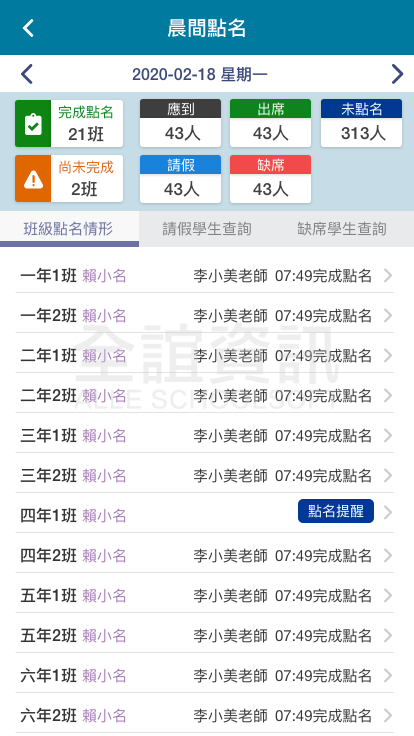
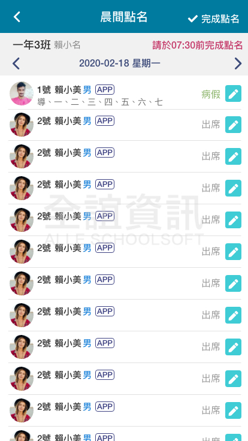
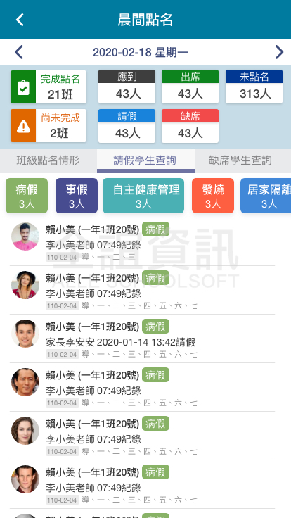
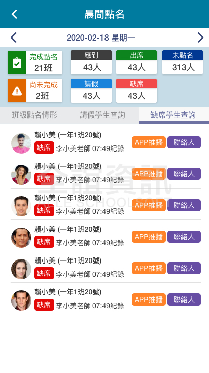

<div class="APP_application_list_class">
    <div class="APP_application_list_title">
      <span class="APP_application_list_title_left">
        <h4>晨間點名</h4>  
      </span>
      <span class="APP_application_list_title_right">
        <span class="APP_list_user APP_user_orange">
          學生
        </span>
        <span class="APP_list_user APP_user_green">
          老師
        </span>
      </span>
      <div class="clear"></div>
    </div>
  
    <div class="APP_application_list_words">
        提供導師每天第一堂課的點名系統，導師點名完成後，管理端可觀看全校點名與請假統計，以及查詢缺席學生並通知學生家長。
    </div>
  
    <div class="APP_application_list_pic">
      <span class="APP_list_pic_margin">
        
      </span>
      <span class="APP_list_pic_margin">
        
      </span>
      <span class="APP_list_pic_margin">
        
      </span>
      <span class="APP_list_pic_margin">
        
      </span>
    </div>
  </div>
  